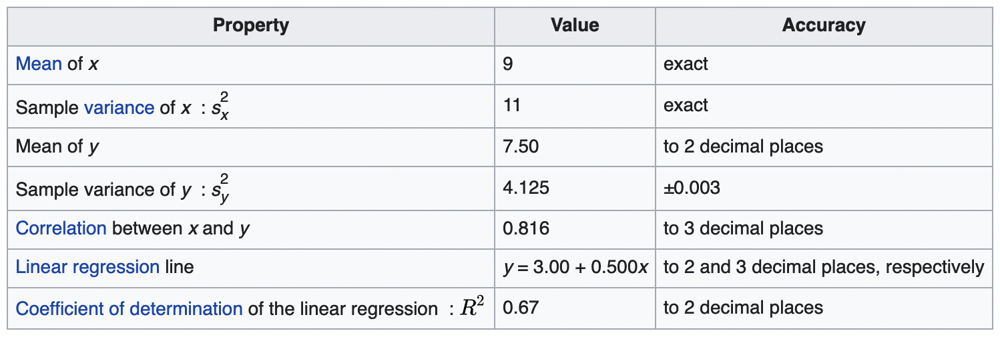
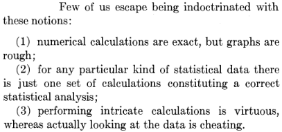
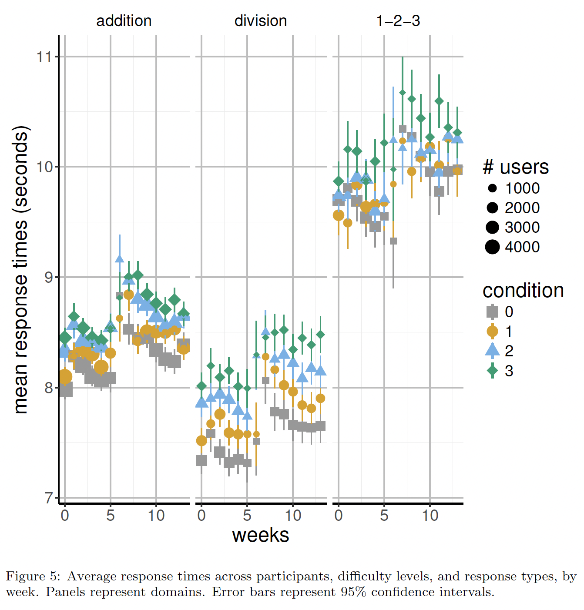

Contents
| Psychology | Technology |
|---|---|
| Bad viz | ggplot2 |
| Better viz | ggplot2 |
| Best viz | ggplot2 |
| Interactive viz | Shiny, plotly |
Objectives
Design visualizations that communicate the intended message clearly, build data visualizations using the ggplot2 library in R, build interactive dashboards, pitch the results of a data visualization project to a client.


Study tip top ten
- Live and breathe the flipped classroom.
- Consult the ggplot2 website.
- Consult the ggplot2 book.
- Print the ggplot2 cheatsheet.
- This is not a presentation: use the code, follow the links.
- Sketch before you code.
- Help and challenge each other.
- Data science is serious. Have some fun.
- Play. Break the rules.

Give me a break

Worst graph

Source: Karl Broman
Data is beautiful

Source: reddit.com/r/dataisbeautiful
Give me a break

Table versus plot
Code
library("gt")
data("pizzaplace")
pizza_top <- pizzaplace %>%
dplyr::mutate(size = factor(size, levels = c("S", "M", "L"))) %>%
dplyr::count(name, type, size, price, sort = TRUE) %>%
dplyr::top_n(n = 5)
pizza_top %>%
gt::gt() %>%
gt::tab_header(title = "Pizza Top 5", subtitle = "2015") %>%
gt::fmt_currency(columns = price, currency = "USD") %>%
gt::tab_source_note(source_note = gt::md("Source: [pizzaplace dataset](https://gt.rstudio.com/articles/gt-datasets.html#pizzaplace)")) %>%
gt::opt_stylize(style = 6)| Pizza Top 5 | ||||
| 2015 | ||||
| name | type | size | price | n |
|---|---|---|---|---|
| big_meat | classic | S | $12.00 | 1914 |
| thai_ckn | chicken | L | $20.75 | 1410 |
| five_cheese | veggie | L | $18.50 | 1409 |
| four_cheese | veggie | L | $17.95 | 1316 |
| classic_dlx | classic | M | $16.00 | 1181 |
| Source: pizzaplace dataset | ||||

Table versus plot
Code
library("gt")
pizza_season <- pizzaplace %>%
dplyr::mutate(month = lubridate::month(date, label = TRUE)) %>%
dplyr::group_by(month) %>%
dplyr::count(type)
pizza_season %>%
tidyr::pivot_wider(names_from = month, values_from = n) %>%
gt::gt() %>%
gt::tab_header(title = "Pizza Season", subtitle = "2015") %>%
gt::tab_source_note(source_note = gt::md("Source: [pizzaplace dataset](https://gt.rstudio.com/articles/gt-datasets.html#pizzaplace)")) %>%
gt::opt_stylize(style = 6)| Pizza Season | ||||||||||||
| 2015 | ||||||||||||
| type | Jan | Feb | Mar | Apr | May | Jun | Jul | Aug | Sep | Oct | Nov | Dec |
|---|---|---|---|---|---|---|---|---|---|---|---|---|
| chicken | 913 | 875 | 994 | 924 | 939 | 910 | 963 | 934 | 900 | 832 | 981 | 885 |
| classic | 1257 | 1178 | 1236 | 1253 | 1324 | 1199 | 1331 | 1283 | 1202 | 1181 | 1262 | 1182 |
| supreme | 1044 | 964 | 991 | 1013 | 1045 | 1040 | 1041 | 991 | 877 | 998 | 1050 | 933 |
| veggie | 1018 | 944 | 1040 | 961 | 1020 | 958 | 1057 | 960 | 911 | 872 | 973 | 935 |
| Source: pizzaplace dataset | ||||||||||||
Code

Code

Anscombe’s quartet



Exploratory versus explanatory


Or ... stat. model: 320 Brier scores

First impression.
Data-to-ink ratio, chart junk, memorable, readability, ...
Getting acquainted.
Scales, aspect ratios, caption, interpretability, attributes (color, shapes, size, etc), suitability, misleading, cherry-picking, 3d, ...
Data-to-ink ratio?

First impression.
Data-to-ink ratio, chart junk, memorable, readability, ...
Getting acquainted.
Scales, aspect ratios, caption, interpretability, attributes (color, shapes, size, etc), suitability, misleading, cherry-picking, 3d, ...
Chart junk?

First impression.
Data-to-ink ratio, chart junk, memorable, readability, ...
Getting acquainted.
Scales, aspect ratios, caption, interpretability, attributes (color, shapes, size, etc), suitability, misleading, cherry-picking, 3d, ...
Give me a break

Is visualization required for interpretation? If so, is it sufficient?
Typography
Learn everything about typography.
Find inspiration and recommendations.
Choose a font for data visualizations.
Pick good font combinations.
Or just use arial or helvetica.

Themes


Code
# download.file("https://github.com/ipython/xkcd-font/raw/master/xkcd-script/font/xkcd-script.ttf", destfile = "xkcd-script.ttf") # download xkcd Script font
# system("open xkcd-script.ttf", wait = FALSE) # open and install xkcd Script font on MacOS
# download.file("http://simonsoftware.se/other/xkcd.ttf", destfile = "xkcd.ttf") # download xkcd font
# system("open xkcd.ttf", wait = FALSE) # open and install xkcd font on MacOS
library("showtext")
library("xkcd")
sysfonts::font_add(family = "xkcd Script", regular = "xkcd-script.ttf")
showtext::showtext_auto()
xrange <- range(as.numeric(pizza_season$month))
yrange <- range(pizza_season$n)
ratioxy <- diff(xrange) / diff(yrange)
x <- 3
y <- 1180
scale <- 60
n <- 1
mapman <- ggplot2::aes(x, y, scale, ratioxy, angleofspine, anglerighthumerus, anglelefthumerus,
anglerightradius, angleleftradius, anglerightleg, angleleftleg, angleofneck)
dataman <- tibble::tibble(x = x, y = y,
scale = scale,
ratioxy = ratioxy,
angleofspine = runif(n, -pi/2-pi/10, -pi/2+pi/10),
anglerighthumerus = runif(n, -pi/6-pi/10, -pi/6+pi/10),
anglelefthumerus = runif(n, pi+pi/6-pi/10, pi+pi/6+pi/10),
anglerightradius = runif(n, -pi/4, pi/4),
angleleftradius = runif(n, pi-pi/4, pi+pi/4),
anglerightleg = runif(n, 3*pi/2+pi/12, 3*pi/2+pi/12+pi/10),
angleleftleg = runif(n, 3*pi/2-pi/12-pi/10, 3*pi/2-pi/12),
angleofneck = runif(n, -pi/2-pi/10, -pi/2+pi/10))
datatalk <- tibble::tibble(xbegin = 4, ybegin = 1185, xend = 5, yend = 1215)
pizza_season %>%
ggplot2::ggplot() +
ggplot2::geom_smooth(aes(x = month, y = n, group = type, linetype = type),
color = "black", se = FALSE) +
ggplot2::labs(title = "Pizza Season", subtitle = "2015") +
ggplot2::theme_minimal() +
ggplot2::theme(text = element_text(family = "xkcd Script", size = 30)) +
ggplot2::annotate("text", x = 6.5, y = 1215, label = "The figures don't go\noff the charts, so\nwhat's the plot of this graph?", family="xkcd Script") +
xkcd::xkcdaxis(xrange, yrange) +
xkcd::xkcdman(mapman, dataman) +
xkcd::xkcdline(aes(x = xbegin, y = ybegin, xend = xend, yend = yend),
datatalk, xjitteramount = 0.4)
Color


Color blindness


[1] "Archambault" "Cassatt1" "Cassatt2" "Demuth" "Derain"
[6] "Egypt" "Greek" "Hiroshige" "Hokusai2" "Hokusai3"
[11] "Ingres" "Isfahan1" "Isfahan2" "Java" "Johnson"
[16] "Kandinsky" "Morgenstern" "OKeeffe1" "OKeeffe2" "Pillement"
[21] "Tam" "Troy" "VanGogh3" "Veronese" 
Color accuracy
Print-proof, monitor/beamer-proof, colorblind-proof?
- Use grayscale (but color-coding is superior)
- Use a secondary aesthetic for color
- Use a viridis color map


Continue learning
Viz types and examples: From Data to Viz, The R Graph Gallery, clauswilke.com
Extensions: ggplot2 Extensions Gallery
Books: Fundamentals of Data Visualization
NYT: What’s going on in this graph?
Data: Statistics Netherlands or data()

Get inspiration
Podcasts: Data Stories, Explore Explain, Data Viz Today
Blogs: FlowingData
Journals: Nightingale
Comics: Matt-Heun Hong, Martin Telefont, Natalia Kiseleva
Generative art: Clause O. Wilke, Danielle Navarro, Thomas Lin Pedersen
Awards: Information is Beautiful
Interactive visualizations: R Psychologist
Explorable explanations: Nicky Case, Setosa

Colophon
Part of the Behavioural Data Science Toolbox course, M.S. Behavioural Data Science, University of Amsterdam, the Netherlands.
Created with Quarto (Revealjs) and generated on September 13, 2022.
Reproducibility receipt
Session information
─ Session info ───────────────────────────────────────────────────────────────
setting value
version R version 4.2.1 (2022-06-23)
os macOS Monterey 12.5.1
system aarch64, darwin20
ui X11
language (EN)
collate en_US.UTF-8
ctype en_US.UTF-8
tz Europe/Amsterdam
date 2022-09-13
pandoc 2.18 @ /Applications/RStudio.app/Contents/MacOS/quarto/bin/tools/ (via rmarkdown)
─ Packages ───────────────────────────────────────────────────────────────────
package * version date (UTC) lib source
assertthat 0.2.1 2019-03-21 [1] CRAN (R 4.2.0)
backports 1.4.1 2021-12-13 [1] CRAN (R 4.2.0)
base64enc 0.1-3 2015-07-28 [1] CRAN (R 4.2.0)
broom 1.0.0 2022-07-01 [1] CRAN (R 4.2.0)
bslib 0.4.0 2022-07-16 [1] CRAN (R 4.2.0)
cachem 1.0.6 2021-08-19 [1] CRAN (R 4.2.0)
cellranger 1.1.0 2016-07-27 [1] CRAN (R 4.2.0)
checkmate 2.1.0 2022-04-21 [1] CRAN (R 4.2.0)
cli 3.3.0 2022-04-25 [1] CRAN (R 4.2.0)
clipr 0.8.0 2022-02-22 [1] CRAN (R 4.2.0)
cluster 2.1.3 2022-03-28 [1] CRAN (R 4.2.1)
colorblindr * 0.1.0 2022-08-17 [1] Github (clauswilke/colorblindr@e6730be)
colorspace * 2.1-0 2022-07-09 [1] R-Forge (R 4.2.1)
commonmark 1.8.0 2022-03-09 [1] CRAN (R 4.2.0)
cowplot * 1.1.1 2022-08-17 [1] Github (wilkelab/cowplot@555c9ae)
crayon 1.5.1 2022-03-26 [1] CRAN (R 4.2.0)
curl 4.3.2 2021-06-23 [1] CRAN (R 4.2.0)
data.table 1.14.2 2021-09-27 [1] CRAN (R 4.2.0)
datasauRus * 0.1.6 2022-05-04 [1] CRAN (R 4.2.0)
DBI 1.1.3 2022-06-18 [1] CRAN (R 4.2.0)
dbplyr 2.2.1 2022-06-27 [1] CRAN (R 4.2.0)
deldir 1.0-6 2021-10-23 [1] CRAN (R 4.2.0)
desc 1.4.1 2022-03-06 [1] CRAN (R 4.2.0)
details * 0.3.0 2022-03-27 [1] CRAN (R 4.2.0)
digest 0.6.29 2021-12-01 [1] CRAN (R 4.2.0)
dplyr * 1.0.9 2022-04-28 [1] CRAN (R 4.2.0)
ellipsis 0.3.2 2021-04-29 [1] CRAN (R 4.2.0)
emo * 0.0.0.9000 2022-09-06 [1] Github (hadley/emo@3f03b11)
evaluate 0.16 2022-08-09 [1] CRAN (R 4.2.0)
extrafont * 0.18 2022-04-12 [1] CRAN (R 4.2.0)
extrafontdb 1.0 2012-06-11 [1] CRAN (R 4.2.0)
fansi 1.0.3 2022-03-24 [1] CRAN (R 4.2.0)
farver 2.1.1 2022-07-06 [1] CRAN (R 4.2.0)
fastmap 1.1.0 2021-01-25 [1] CRAN (R 4.2.0)
forcats * 0.5.1 2021-01-27 [1] CRAN (R 4.2.0)
foreign 0.8-82 2022-01-16 [1] CRAN (R 4.2.1)
Formula 1.2-4 2020-10-16 [1] CRAN (R 4.2.0)
fs 1.5.2 2021-12-08 [1] CRAN (R 4.2.0)
gargle 1.2.0 2021-07-02 [1] CRAN (R 4.2.0)
generics 0.1.3 2022-07-05 [1] CRAN (R 4.2.0)
ggfun 0.0.7 2022-08-31 [1] CRAN (R 4.2.0)
ggimage 0.3.1 2022-04-25 [1] CRAN (R 4.2.0)
ggplot2 * 3.3.6 2022-05-03 [1] CRAN (R 4.2.0)
ggplotify 0.1.0 2021-09-02 [1] CRAN (R 4.2.0)
glue 1.6.2 2022-02-24 [1] CRAN (R 4.2.0)
googledrive 2.0.0 2021-07-08 [1] CRAN (R 4.2.0)
googlesheets4 1.0.1 2022-08-13 [1] CRAN (R 4.2.0)
gridExtra 2.3 2017-09-09 [1] CRAN (R 4.2.0)
gridGraphics 0.5-1 2020-12-13 [1] CRAN (R 4.2.0)
gt * 0.7.0 2022-08-25 [1] CRAN (R 4.2.0)
gtable 0.3.0 2019-03-25 [1] CRAN (R 4.2.0)
haven 2.5.0 2022-04-15 [1] CRAN (R 4.2.0)
hexbin 1.28.2 2021-01-08 [1] CRAN (R 4.2.0)
hexSticker * 0.4.9 2020-12-05 [1] CRAN (R 4.2.0)
Hmisc 4.7-1 2022-08-15 [1] CRAN (R 4.2.0)
hms 1.1.1 2021-09-26 [1] CRAN (R 4.2.0)
htmlTable 2.4.1 2022-07-07 [1] CRAN (R 4.2.0)
htmltools 0.5.3 2022-07-18 [1] CRAN (R 4.2.0)
htmlwidgets 1.5.4 2021-09-08 [1] CRAN (R 4.2.0)
httpuv 1.6.5 2022-01-05 [1] CRAN (R 4.2.0)
httr 1.4.3 2022-05-04 [1] CRAN (R 4.2.0)
interp 1.1-3 2022-07-13 [1] CRAN (R 4.2.0)
jpeg 0.1-9 2021-07-24 [1] CRAN (R 4.2.0)
jquerylib 0.1.4 2021-04-26 [1] CRAN (R 4.2.0)
jsonlite 1.8.0 2022-02-22 [1] CRAN (R 4.2.0)
knitr 1.39 2022-04-26 [1] CRAN (R 4.2.0)
labeling 0.4.2 2020-10-20 [1] CRAN (R 4.2.0)
later 1.3.0 2021-08-18 [1] CRAN (R 4.2.0)
lattice 0.20-45 2021-09-22 [1] CRAN (R 4.2.1)
latticeExtra 0.6-30 2022-07-04 [1] CRAN (R 4.2.0)
lifecycle 1.0.1 2021-09-24 [1] CRAN (R 4.2.0)
lubridate * 1.8.0 2021-10-07 [1] CRAN (R 4.2.0)
magick 2.7.3 2021-08-18 [1] CRAN (R 4.2.0)
magrittr 2.0.3 2022-03-30 [1] CRAN (R 4.2.0)
Matrix 1.4-1 2022-03-23 [1] CRAN (R 4.2.1)
MetBrewer * 0.2.0 2022-03-21 [1] CRAN (R 4.2.0)
mgcv 1.8-40 2022-03-29 [1] CRAN (R 4.2.1)
mime 0.12 2021-09-28 [1] CRAN (R 4.2.0)
modelr 0.1.8 2020-05-19 [1] CRAN (R 4.2.0)
munsell 0.5.0 2018-06-12 [1] CRAN (R 4.2.0)
nlme 3.1-157 2022-03-25 [1] CRAN (R 4.2.1)
nnet 7.3-17 2022-01-16 [1] CRAN (R 4.2.1)
pillar 1.8.0 2022-07-18 [1] CRAN (R 4.2.0)
pkgconfig 2.0.3 2019-09-22 [1] CRAN (R 4.2.0)
plyr 1.8.7 2022-03-24 [1] CRAN (R 4.2.0)
png 0.1-7 2013-12-03 [1] CRAN (R 4.2.0)
promises 1.2.0.1 2021-02-11 [1] CRAN (R 4.2.0)
purrr * 0.3.4 2020-04-17 [1] CRAN (R 4.2.0)
R6 2.5.1 2021-08-19 [1] CRAN (R 4.2.0)
ragg 1.2.2 2022-02-21 [1] CRAN (R 4.2.0)
RColorBrewer 1.1-3 2022-04-03 [1] CRAN (R 4.2.0)
Rcpp 1.0.9 2022-07-08 [1] CRAN (R 4.2.0)
readr * 2.1.2 2022-01-30 [1] CRAN (R 4.2.0)
readxl 1.4.0 2022-03-28 [1] CRAN (R 4.2.0)
reprex 2.0.2 2022-08-17 [1] CRAN (R 4.2.1)
rfishdraw * 0.1.0 2021-09-08 [1] CRAN (R 4.2.0)
RJSONIO 1.3-1.6 2021-09-16 [1] CRAN (R 4.2.0)
rlang 1.0.5 2022-08-31 [1] CRAN (R 4.2.0)
rmarkdown 2.14 2022-04-25 [1] CRAN (R 4.2.0)
rpart 4.1.16 2022-01-24 [1] CRAN (R 4.2.1)
rprojroot 2.0.3 2022-04-02 [1] CRAN (R 4.2.0)
rstudioapi 0.13 2020-11-12 [1] CRAN (R 4.2.0)
Rttf2pt1 1.3.10 2022-02-07 [1] CRAN (R 4.2.0)
rvest 1.0.2 2021-10-16 [1] CRAN (R 4.2.0)
RXKCD * 1.9.2 2020-02-24 [1] CRAN (R 4.2.0)
sass 0.4.2 2022-07-16 [1] CRAN (R 4.2.0)
scales 1.2.0 2022-04-13 [1] CRAN (R 4.2.0)
sessioninfo * 1.2.2 2021-12-06 [1] CRAN (R 4.2.0)
shiny 1.7.2 2022-07-19 [1] CRAN (R 4.2.0)
showtext * 0.9-5 2022-02-09 [1] CRAN (R 4.2.0)
showtextdb * 3.0 2020-06-04 [1] CRAN (R 4.2.0)
stringi 1.7.8 2022-07-11 [1] CRAN (R 4.2.0)
stringr * 1.4.1 2022-08-20 [1] CRAN (R 4.2.0)
survival 3.3-1 2022-03-03 [1] CRAN (R 4.2.1)
sysfonts * 0.8.8 2022-03-13 [1] CRAN (R 4.2.0)
systemfonts 1.0.4 2022-02-11 [1] CRAN (R 4.2.0)
textshaping 0.3.6 2021-10-13 [1] CRAN (R 4.2.0)
tibble * 3.1.8 2022-07-22 [1] CRAN (R 4.2.0)
tidyr * 1.2.0 2022-02-01 [1] CRAN (R 4.2.0)
tidyselect 1.1.2 2022-02-21 [1] CRAN (R 4.2.0)
tidyverse * 1.3.2 2022-07-18 [1] CRAN (R 4.2.0)
timevis * 2.0.0 2021-12-20 [1] CRAN (R 4.2.0)
tzdb 0.3.0 2022-03-28 [1] CRAN (R 4.2.0)
utf8 1.2.2 2021-07-24 [1] CRAN (R 4.2.0)
vctrs 0.4.1 2022-04-13 [1] CRAN (R 4.2.0)
viridisLite 0.4.0 2021-04-13 [1] CRAN (R 4.2.0)
withr 2.5.0 2022-03-03 [1] CRAN (R 4.2.0)
xfun 0.32 2022-08-10 [1] CRAN (R 4.2.0)
xkcd * 0.0.6 2018-07-11 [1] CRAN (R 4.2.0)
xml2 1.3.3 2021-11-30 [1] CRAN (R 4.2.0)
xtable 1.8-4 2019-04-21 [1] CRAN (R 4.2.0)
yaml 2.3.5 2022-02-21 [1] CRAN (R 4.2.0)
yulab.utils 0.0.5 2022-06-30 [1] CRAN (R 4.2.0)
[1] /Library/Frameworks/R.framework/Versions/4.2-arm64/Resources/library
──────────────────────────────────────────────────────────────────────────────License


Data Visualization by Alexander Savi is licensed under a Creative Commons Attribution-ShareAlike 4.0 International License. An Open Educational Resource. Approved for Free Cultural Works.